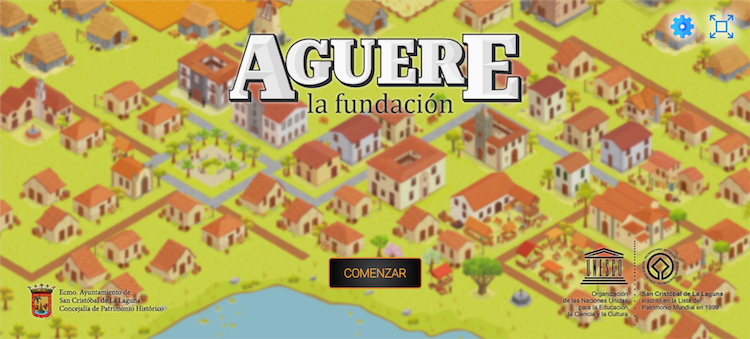

"Aguere. La Fundación"
La Concejalía de Patrimonio Cultural del Ayuntamiento de La Laguna y Taro Somos Patrimonio han puesto en marcha el videojuego “Aguere. La Fundación”, una nueva herramienta que permitirá recrear digitalmente la construcción de La Laguna y formar parte de su evolución, desde 1496 hasta finales del siglo XVIII. Esta iniciativa interactiva, especialmente diseñada para jugar en PC y que ya está disponible en abierto y de forma gratuita, incluye un plan de difusión entre el alumnado y profesorado de todo el municipio, que se pondrá en marcha con el nuevo curso escolar.
El técnico de la empresa Taro Somos Patrimonio, Luana Studer, explica que “Aguere. La Fundación” apuesta por “el entretenimiento como una herramienta pedagógica que permite conocer el origen del patrimonio local y que el jugador pueda ir aprendiendo, de una forma amena, la evolución arquitectónica de la ciudad”.
“De hecho, los jugadores podrán no solo ir construyendo la ciudad, sino que lo harán desbloqueando las unidades de construcción y los principales monumentos, acordes a cada momento histórico, hasta llegar a conformar el plano trazado en 1779 por M. le Chevalier”, destaca Studer. Además de erigir la ciudad, los jugadores se encargarán de la gestión de recursos, población o desarrollo económico, incluyéndose la posibilidad de colapso social y físico si las decisiones no son las correctas.
El videojuego recrea los espacios naturales, como las montañas que rodean la ciudad o la antigua laguna que le da nombre, donde los jugadores y jugadoras podrán ir incorporando todas las construcciones conforme a los tipos arquitectónicos de cada periodo y empezando por viviendas de barro con techumbres de paja, talleres, desarrollo agrario…
El juego va evolucionando a construcciones más complejas, con la incorporación de edificios históricos centrales, como la Alhóndiga, la Casa de los Capitanes o el edificio del Ayuntamiento, entonces del Cabildo, así como la plaza del Adelantado o las iglesias de La Concepción y Los Remedios, recorriendo tres centurias de la historia local. Cada nuevo logro irá acompañado de un texto descriptivo de los valores patrimoniales e históricos de los edificios que, además, aparecerán en su ubicación real actual.
La iniciativa, disponible en https://juegoaguere.lalaguna.es tiene un componente educativo que se quiere aprovechar al máximo posible y que está especialmente dirigido al alumnado y cuerpo docente. Así, con el inicio del nuevo curso escolar, se va a desarrollar la segunda fase tras la creación digital del juego, que consiste en su difusión coma herramienta educativa y la promoción del uso del juego en los CEIP del municipio.